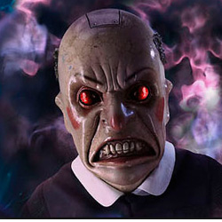

| HOME | The Doctors | The Companions | The Villians |
|
|||
|
Beast The Beast is an ancient being that has been trapped for billions of years in a pit at the centre of the planet named in the Scriptures of the Veltino as Krop Tor, orbiting a black hole humans have designated K37 Gem 5, kept in balance by an energy source below the surface of the planet. This counterweight extends out in a funnel into open space. The Beast is imprisoned by "Disciples of Light", who have crafted its prison such that if it ever frees itself, the gravitational force will collapse and the planet, and the Beast with it, will be pulled into the black hole.
The Beast is awakened when a human expedition party fly their ship through the funnel to land on the planet, hoping to excavate and claim the power source for their Empire. The Beast telepathically speaks through the empathic Ood, who becomes the "Legion of the Beast", and later possesses Toby Zed. Resembling a huge horned demon, the Beast claims that it is the basis of the Devil figure in all religions and mythologies (including Abaddon, Satan, the Kaled god of war, and Lucifer), and that it originates from before the creation of the universe. Whether or not this is true is left ambiguous and the exact nature of the Beast remains unclear. The Beast appears to have genuine supernatural powers, knows and plays on the hidden fears and secrets of those with whom it speaks, and the Doctor describes it as extremely intelligent. Intending to escape Krop Tor, the Beast possesses Toby Zed, hoping to escape inside his mind while leaving its physical body still trapped in the planet. However, the Doctor smashes the power source of the prison, causing Krop Tor to be dragged into the black hole, and the Beast's body bursts into flames. At that moment, while fleeing the planet in a spacecraft with his team, Toby, who is possessed by the Beast, angrily proclaims that as long as he was feared, he could never be destroyed. Rose Tyler, however, shoots out the cockpit window with a bolt gun, causing Toby, with the mind of the Beast, to be blown into the black hole. In present day Cardiff the Torchwood team encounters a similar giant creature named Abaddon, released from the Cardiff spacetime Rift, referred to as the "son of the great Beast". |